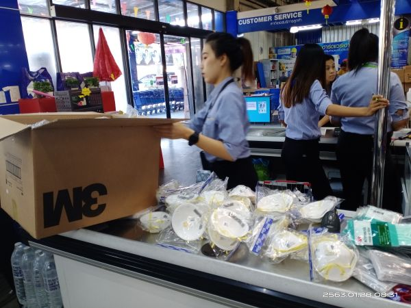

杂谈（没有口罩的春节）
原文链接 备份链接 ——《杂谈》：没有口罩的春节—— 我的口罩用完了，那些都是我在雾霾的时候戴过的，没有扔，又拿出来戴了两三天，现在感觉必须得扔了。 今天早上开了一个会，我被任命为临时防疫办公室副主任了，但不得放下原本的工作，按照黄帝书记 …
图片:首批支援口罩运装完成，将送往合肥 受访者张进/摄
经济观察网 记者 阿茹汗 1月29日，当地时间5点45分，春秋航空9C8574次航班从泰国首都曼谷准时起飞，它的目的地是安徽省合肥市。
在机场外，送完机的张进终于松了一口气。对于他而言，这是一次极其特殊的送行：这架民航客机上运送的200箱，10.7万只N95口罩将在三个多小时候后抵达合肥，并从合肥机场陆运至国药控股湖北物流中心，最终将被分配至武汉抗击疫情的第一线。
张进是洽洽食品泰国工厂厂长，为了这批口罩，张进和他手下的工作人员忙活奔波了整整六天。
20万只口罩！
因为工作需要，张进的春节早已计划在洽洽食品位于泰国的工厂度过，虽然每日都关注国内新型冠状病毒疫情，但因为远离疫区，张进没法感同身受，直到1月24日，年三十上午10点半左右，刚刚参加完工厂春节庆祝活动的张进，被拉进了一个微信工作群，他才意识到形势严峻。从这一刻开始，他的工作中又多了一份新的内容——抗击疫情。
这个工作群是由洽洽食品董事长、副总裁、品牌部门负责人临时组建，群里的第一条信息就是要求泰国工厂用最短的时间筹备医疗物资：N95口罩20万只！
张进的手机上同时被推送来更多的疫情消息：武汉多家医院从1月23日开始向社会各界紧急求援包括口罩、护目镜在内的医疗物资，有些医院称现有物资只能维持3-5天，而且求援医院名单还在持续更新中。
口罩告急，八方支援，义不容辞。
但这么多符合医用标准的N95口罩从哪里来？什么价位？怎么运输？对于张进来说这是完全陌生的领域，一时不得章法。不过，任务紧急，他叫上另外两位中国籍同事，一头扎进办公室，开始找口罩。
距离接到任务过去两个小时，“小分队”从合作的2家办公劳保用品供应商处预定到了15万只左右的N95口罩，价格为每只17泰铢，之后又临时从网上联系新的供应商，直到下午3点左右，锁定了5家供应商共计5万只口罩，每只价格在15-20泰铢，加到一起20万只。
20万只N95口罩基本解决，任务似乎完成的并不难。但是公司内部开始拟定合同走流程时，变数来了。共7家供应商先后通知，口罩涨价至35-40泰铢不等，还有一家供应商原本答应的3万只口罩被他人抢先，张进本要预付定金，却晚了一步。
反悔、反复和意外只是刚刚开始。
变数
最先涨起来的是口罩价格。仅一天之后，张进的小分队能够买到的口罩价格普遍涨到了80-85泰铢每只，接近18元人民币。不过，在这个特殊的时刻，只要钱能解决的都不是问题。张进接到的公司总部的指令是，价格不管怎么变，都要立即下单。
比价格变化还要快的是货源数量。1月25日早上9点半，一位主要供货商向张进反馈说，无法按指定的量供货了。这导致已经确定的17万只口罩总量缩减到了13.3万只。这时的张进已经开始焦虑了，总是如此反反复复，到底何时才能凑够20万只？
1月25日，张进小分队准备上街搜口罩，沿着大城府（洽洽泰国工厂所在城市）大街小巷，走进每个药店去采购口罩。

图片1:沿街扫药店收集口罩 张进（受访者）/摄
洽洽泰国工厂的司机小地是一位泰籍华裔，会说中文，是出门扫药店的主力。他每到一个药店就会给“洽洽泰国现场沟通群”这个微信工作群发来视频。其中一段视频中，一位药店工作人员身旁放了一个大纸箱，工作人员一边扫码一边装箱，旁边又站了一位工作人员也在帮忙清点口罩。小地随后发来了一段语音，大概意思是，这个药店的口罩全被他包揽了，也有人求他可否匀一点口罩，可是小地拒绝了。他的语气中充满开心。
1月25日那一天扫街的成果是1万只口罩，截至当晚8点，口罩总数达到14.3万只；1月26日，周日，张进驱车赶往76公里之外的曼谷，准备去3M公司总部碰碰运气，但是3M公司的库存也已告罄；当天，张进小分队又联系到一家大城府公立医院口罩供应商，答应给到29500只口罩，但是这批口罩并不符合国内医院所需的口罩标准，只能放弃。
截至1月26日晚，张进已经问遍了曼谷、大城两地大型供应商、商贸公司，总计筹集到了14.6万只口罩，按照原装的箱子算总计750箱。
张进的脑子里有块小黑板，刚更新完口罩总数不久，又因为这样那样的原因要擦掉，重新再写上一个新的总数。这些不断变化的数字还要同步给另一个工作群，这个群里一共有18个人，其中洽洽的工作人员负责汇总口罩信息、春秋航空工作人员负责航空运输、还有合肥机场和物流公司的人负责货物的清关等流程。“我们密切讨论了三四天，包括包装的形式，怎么样才能把春秋航空给我们免费匀出来的14立方的空间利用充足，还有报关流程、货运、对接等，反复更新信息，每个人都积极参与，毫无怨言，”张进介绍。
事实上，张进所代表的洽洽食品也只是诸多爱心捐赠企业中的一员。自新型冠状病毒疫情爆发以来，社会各界纷纷驰援，捐钱捐物，爱心捐赠地图快速扩容。根据官方披露，截至1月27日12点，全国红十字会系统共接收社会捐赠物款6.9亿元，其中现金捐赠5.7亿元，其余为物资捐赠。
感动
1月27日，此前预定的口罩按照张进的要求陆续被送达至洽洽的泰国工厂，张进临时组织工人将口罩原包装拆掉，重新统一打包，这一干就是一整天。重新打包的口罩将于第二天的1月28日运往曼谷机场。张进这一忙活，居然忘了预定第二天送往曼谷的货车，直到晚上10点半才突然想起来。
情急之下，他拨通了一位马来西亚华侨朋友，这位朋友此前就已经帮助张进联系过供应商，解决过1万只口罩的缺口。这次再次寻求帮助，对方爽快答应派车并且免费运送。马来西亚朋友只说了一句：“现在这个时候能做一点是一点，”张进听罢，心中感动不已。
几天疯狂的采购，让张进无暇静下心来沉淀这个特殊的春节所经历的一切。在送走了第一批口罩后，张进接受经济观察网采访时道出了这几日的点滴感动。除了这位马来西亚华侨外，一位泰国药店老板也让张进记忆深刻。
在到处扫药店之时，为了能够争取到更多的口罩，张进向这位药店老板说明了情况，此次采购并非个人行为，而是公司的爱心捐赠，口罩将捐赠给中国武汉抗击疫情一线。药店老板听后很受感动，当即承诺通过她的个人渠道帮助囤货1万只。不过遗憾的是，因为货源实在紧张，最后老板只筹到了1731只口罩。“这是我遇到的善良的泰国药店老板，虽然没帮上大忙，但还是要感谢。”
“这真是一个有意义的春节，”张进最后向记者感叹。在运走了第一批的口罩后，张进的工作还没有结束。1月29日那一天，他还在打电话和马来西亚朋友确认一批1.4万只的N95口罩的信息，如果货源没有问题，他将组织从马来西亚调来这批口罩；另外，他的工作人员已经深入到泰国北部的一些城市，继续踏上了寻找口罩的路。
同时，在国内，张进的同事已经严阵以待。他们已经联系好了安徽省红十字会和德邦物流，接到货物的第一时间从合肥机场运抵武汉指定物流中心。
1月31日，第二批N95口罩，将按照这条路线再度运抵合肥。
版权声明：以上内容为《经济观察报》社原创作品，版权归《经济观察报》社所有。未经《经济观察报》社授权，严禁转载或镜像，否则将依法追究相关行为主体的法律责任。版权合作请致电：【010-60910566-1260】。
原文链接 备份链接 ——《杂谈》：没有口罩的春节—— 我的口罩用完了，那些都是我在雾霾的时候戴过的，没有扔，又拿出来戴了两三天，现在感觉必须得扔了。 今天早上开了一个会，我被任命为临时防疫办公室副主任了，但不得放下原本的工作，按照黄帝书记 …
原文链接 备份链接 23.01.2020本文字数：1298，阅读时长大约2分钟 导读：比春运期间高铁票更难买的东西，是新型冠状病毒蔓延时期的口罩。 作者 | 第一财经 段倩倩 比春运期间高铁票更难买的东西，是新型冠状病毒蔓延时期的口罩。 …
原文链接 备份链接 成长究竟让我们更勇敢还是更胆小？作家远子给出的答案更接近后者。在这次新型冠状病毒疫情中，人在湖北黄冈的远子不仅要照护好自己，还要承担一个丈夫、父亲的责任。随着当地道路封锁，就连给孩子买一罐奶粉，也变得如登天般困难。四 …
原文链接 备份链接 出品|网易清流工作室 作者|刘亚丹 主编|赵妍 爆料邮箱： stoolpigeon@service.netease.com 没有购销N95资质的口罩供应商，出现在一家基金会供货合同中。不是口罩生产商，曾因医疗器械违规被 …
原文链接 备份链接 在疫情防控的持续压力下，口罩的供给，尤其是防疫一线的供给情况依然紧绷。这背后既有制约企业生产的原料问题，民众也存在过度追求N95等专业口罩的误区，更有人借机囤积居奇，乃至造假售假。 全文3748字，阅读约需5.5 …